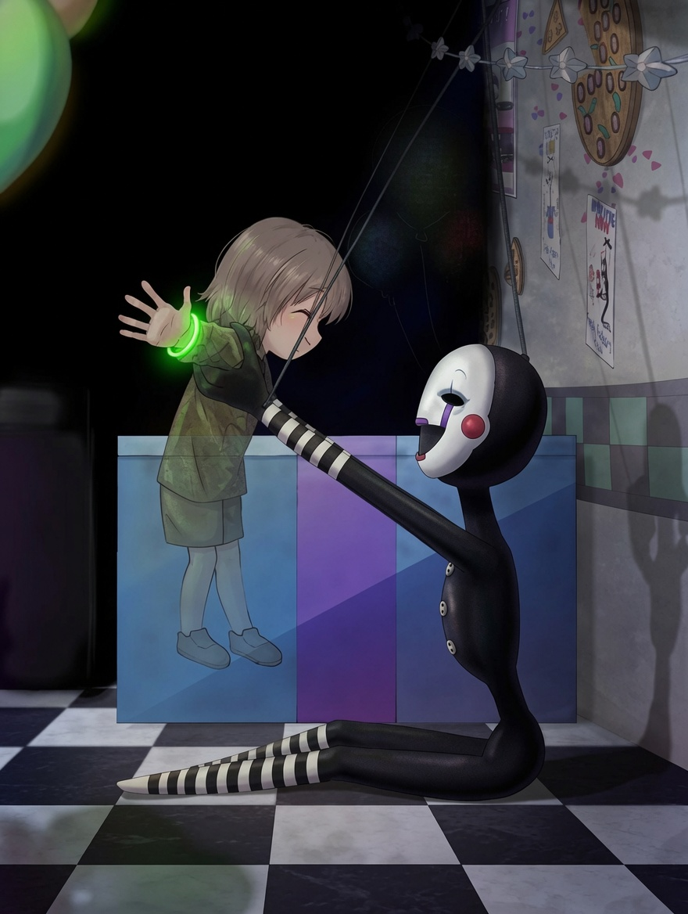
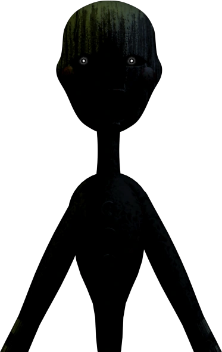
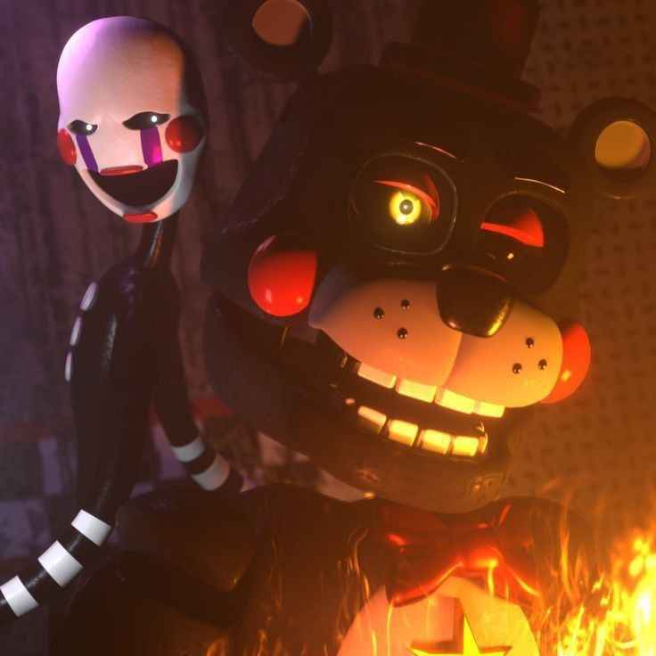

Histoire complète
Derrière l'animatronique se cache l'âme d'une petite fille : Charlotte Emily. Assassinée par William Afton devant la pizzeria Freddy Fazbear's, cette enfant, enfermée dehors sous la pluie lors d'une fête, avait reçu par son père Henry Emily le plus beau des cadeau : Un animatroniques qui serait toujours là pour la protéger.
Cet animatronique se nomme Puppet et lorsqu'elle a remarqué qu'Emily était dehors, elle sortit pour la retrouver. Sous une pluie battante, Puppet usa de toute ses dernières forces pour réussir sa seule et unique mission : Protéger Emily.
Son esprit habite désormais Puppet, animée par la seule mission de protéger les enfants que William Afton continuera de cibler. C'est elle qui insuffle une vie nouvelle aux animatroniques possédés en plaçant l'âme des victimes dans leurs costumes.

Puppet veillant sur l'âme de Charlie Emily.
Son rôle dans FNAF 2
Dans Five Nights at Freddy's 2, Puppet est enfermée dans une boîte à musique au fond du Puppet's Box. Votre unique moyen de la contrôler est de remonter la boîte à musique via la tablette de surveillance. Si la mélodie s'arrête, elle sort et vous sauteras dessus sans rien qui pourrait vous sauver.
Elle représente une menace unique car elle est immunisée contre le masque Freddy, seule défense disponible contre les autres animatroniques. Sa présence force le joueur à gérer deux systèmes de survie en parallèle, sous pression constante.
Jumpscare de Puppet - FNAF 2
Le Phantom Puppet
Dans Five Nights at Freddy's 3, Puppet n'apparaît plus sous sa forme physique, mais en tant que Phantom — une hallucination visible à partir de la 4 ème nuit sur la caméra 8. Le joueur doit changer rapidement de caméra ou bien fermer le Moniteur sinon Phantom Puppet apparait devant lui pour lui bloquer la vue pendant 16 secondes environ ce qui peut permettre à Springtrap de passer rapidement aux salles suivantes.
Son apparition dans FNAF 3 renforce l'idée que son âme est liée aux lieux et aux événements de la franchise, incapable de disparaître tant que la vérité n'est pas révélée.

L'hallucination de Puppet de FNAF 3
Cependant, ce n'est pas sa seule apparition dans le jeux. En effet, le véritable point fort de FNAF 3 est les mini-jeux secrets trouvables pour débloquer la vraie fin. Et c'est dans le dernier de ses mini-jeux que l'on peut apercevoir Puppet.
Le dernier mini-jeux "Happiest Day" est accessible pendant n'importe quelle nuit en double-cliquant sur le dessin de Puppet sur la caméra 3.
Le mini-jeux se déroule dans la salle à manger d'un restaurant avec quatre tables où le joueur joue ce qui semble être Emily portant le masque de Puppet. Les trois premières tables sont occupées par cinq enfants qui portent tous un masque d'animal assis devant un énorme gâteau. La dernière est au fond de la salle avec uniquement un enfant dépourvu de masque.
Le jeux semble se terminer sans but nécessaire.... enfin ça c'est seulement si le joueur n'a pas réalisé les précédents mini-jeux car si il les réalise tous la salle ne sera pas la même : Chaque enfant apparaitra en face de la quatrième table au fond de la salle, en portant un masque d'animatronique : Freddy, Bonnie, Chica et Foxy. Une fois que tous les enfants sont réunis au fond de la salle, le joueur pose un gâteau sur la table.
Le mini-jeux "Happiest-Day"
Une fois ce gâteau posé, le cinquième enfant, celui qui fût seul auparavant, ouvre lentement les yeux puis enfile un masque représentant Golden Freddy. Les six enfants disparaissent et abandonnent leurs masques au sol, pendant que six ballons représentant leur âme s'envolent lentement.
Ce mini-jeux à une signification profonde en lien avec Puppet. Charlie n'ayant pas pus se sauver elle même, consacre toute son existence à donner aux autres enfants ce qu'elle n'a jamais eu : une fin apaisée. Lorsque les masques tombent pour révéler les visages souriants des enfants, c'est le moment où ils acceptent enfin de lâcher prise. Ils n'ont plus besoin de leurs corps mécaniques pour exister.
Ce qui rend ce moment encore plus tragique, c'est que Puppet ne se libèrera pas elle-même. Elle continuera d'exister, enchaînée à sa mission même après avoir sauvé tous le monde. Elle ne seras libre que bien plus tard lors des êvenements de FNAF 6.
Petit clin d'oeil : Le titre Happiest-Day fait directement référence à la chanson "It's Been So Long" de Living Tombstone, créée en 2014 puisque cette dernière reflète directement les années passées par Puppet à errer dans la pizzeria, prisonière de son rôle de gardienne qui exprime le temps qui s'est écoulé depuis sa mort, sa solitude et son enfermement dans l'animatronique ou encore sa douleur d'exister sans vraiment vivre.
La libération finale
Freddy Fazbear's Pizzeria Simulator marque le dénouement de l'arc narratif de Puppet. Sous son identité humaine de Charlotte Emily, elle comprend enfin que sa mission est accomplie. Les enfants sont en sécurité, et William Afton est neutralisé.
Dans cet opus, on apprend qu'Henry Emily, le père de Charlotte, est conscient que l'âme de sa fille est piégée dans Puppet et a construit Lefty, un animatronique conçu spécifiquement pour la capturer et la contenir. Dans une des fins possibles, Henry met le feu à l'établissement pour libérer toutes les âmes piégées contenant bon nombre d'animatronique dont Lefty; Molten Freddy, un animatronique présent dans Sister Location ; Scrap Baby un autre animatronique de Sister Location et Scraptrap qui est tout simplement William Afton qui a survécu à l'incidendie de FNAF 3

Lefty et Puppet
C'est l'un des moments les plus émouvants de toutes la franchise et les plus touchants. Puppet qui à fait de son existence la lumière qui a guidée les âmes des enfants, trouve enfin sa libération et son Happiest Day à elle.
Conclusion
Puppet est bien plus qu'un simple antagoniste. C'est le fil conducteur émotionnel de la trilogie originale de FNAF. Une âme blessée qui transforme sa propre tragédie en acte de protection pour les autres.
Sa conception visuelle, ses mécaniques de jeu uniques et sa profondeur narrative en font l'un des personnages les plus marquants et complets de l'histoire des jeux d'horreur indépendants.